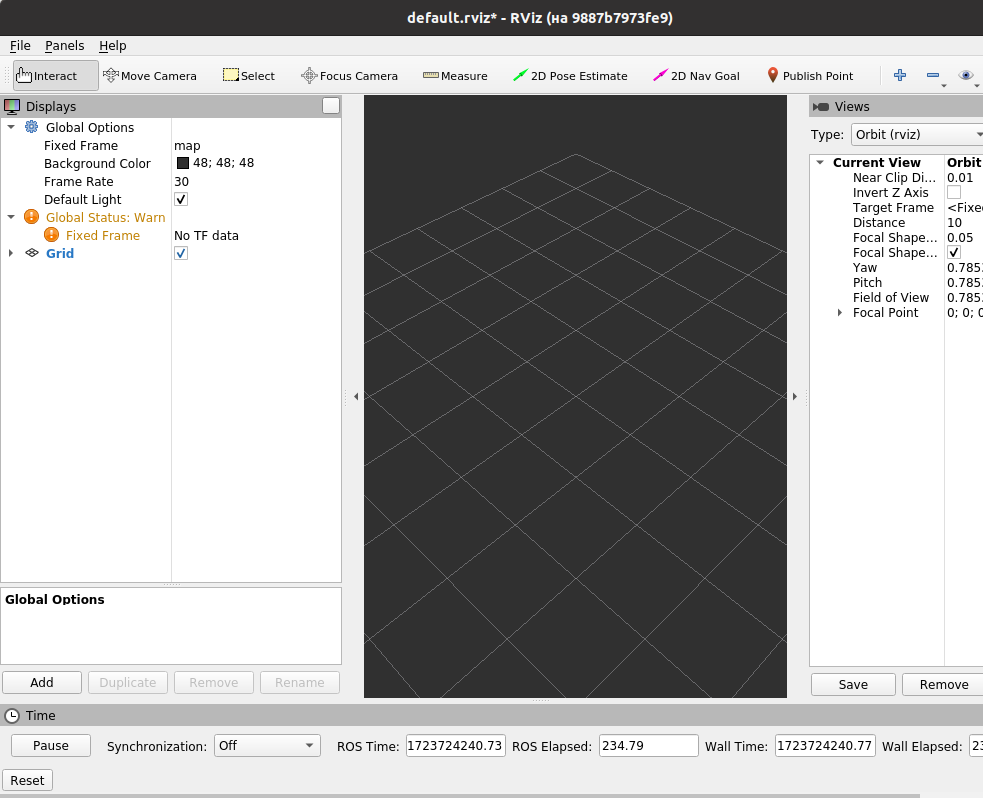

<html><head></head><body>
<title>RVIZ</title>
<h2 align=center>RViz</h2>
<a href="http://wiki.ros.org/rviz">wiki.ros.or</a>: <a href="http://wiki.ros.org/rviz/UserGuide">UserGuide</a><br>
<a href="https://copter-space.gitbook.io/uchebnik-mashinnoe-zrenie-tom-2/razdel-4./vizualizaciya-v-rviz">Визуализация в RVIZ</a>
<p>
Инструмент rviz позволяет в реальном времени визуализировать на 3D-сцене все компоненты робототехнической системы — системы координат, движущиеся части, показания датчиков, изображения с камер.
<p>
<b>Установка rviz:</b><br>
<font color=green>sudo apt-get install ros-noetic-rviz</font>
<p>
<b>Запуск:</b><br>
<font color=green>source /opt/ros/noetic/setup.bash<br>
roscore &<br>
rosrun rviz rviz</font>
<p>
Когда rviz запустится в первый раз, вы увидите пустое окно:<br>

<p>
Самая большая черная часть - это 3D-экран (пустой, потому что смотреть не на что). Слева находится список дисплеев, в котором отображаются все загруженные вами дисплеи. На данный момент он содержит только глобальные параметры и режим просмотра по времени, к которому я вернусь позже. Справа расположены некоторые другие панели, описанные ниже.
<p>
<b>Панель Displays:</b><br>
Дисплей в rviz – это нечто, имеющее отображение в 3D – мире и имеющее опции настройки. Например: облако точек, позиция робота, и т.д. 
<p>
Добавление нового дисплея – кнопка Add на панели внизу:<br>

<p>
Появится окно добавления дисплея:<br>

<p>
В списке вверху перечислены типы дисплеев. Тип дисплея определяет, какой тип данных дисплей визуализирует. В текстовом окне приводится описание выбранного типа дисплея. Внизу следует задать наименование дисплея. Например, если у Вашего робота два лазерных сканера – вы можете создать два дисплея типа «Laser Scan» и назвать их «Лазер База» и «Лазер Голова».  Я создал в разделе LaserScan display с именем My_laser.
<p>
<b>Параметры display</b>:<br>
Каждый display имеет свой набор параметров. Например:
<p>

<p>
<b>Display status</b><br>
Каждому дисплею присваивается свой статус, который позволяет узнать, все ли в порядке. Статус может быть одним из 4: "ОК", "Предупреждение", "Ошибка" или "Отключено". Статус отображается в заголовке дисплея цветом фона, а также в категории статуса, которую вы можете увидеть, если дисплей развернут:<br>

<p>
<b>Перемещение displays</b>:<br>
Вы можете перемещать дисплеи вверх или вниз по списку с помощью кнопок со стрелками справа от кнопок Add/Remove или с помощью механизма Drag’n’Drop указателем мыши.
<p>
<b>Типы displays:</b><br>
<ul>
<li> Axes - Отображает набор осей
<li> Effort - Показывает усилие, прилагаемое к каждому вращающемуся суставу робота.
<li> Camera - Создает новое окно рендеринга с точки зрения камеры и накладывает изображение поверх него.
<li> Grid - Отображает 2D- или 3D-сетку вдоль плоскости
<li> Grid Cells - Рисует ячейки из сетки, обычно это препятствия на карте дорог из стека навигации.
<li> Image - Создает новое окно рендеринга с изображением. В отличие от дисплея камеры, этот дисплей не использует CameraInfo. Версия: Diamondback+
<li> InteractiveMarker - Отображает 3D-объекты с одного или нескольких серверов интерактивных маркеров и позволяет взаимодействовать с ними с помощью мыши. Версия: Electric+
<li> Laser Scan - Отображает данные лазерного сканирования с различными вариантами режимов рендеринга, накопления и т.д.
<li> Map - Отображает карту на наземной плоскости
<li> Markers - Позволяет программистам отображать произвольные примитивные формы в рамках темы
<li> Path - Показывает путь из стека навигации.
<li> Point - Рисует точку в виде маленькой сферы.
<li> Pose - Рисует позу в виде стрелки или оси.
<li> Pose Array - Рисует "облако" стрелок, по одной для каждой позы в массиве поз
<li> Point Cloud(2) - Отображает данные из облака точек с различными вариантами режимов рендеринга, накопления и т.д.
<li> Polygon -Рисует контур многоугольника в виде линий.
<li> Odometry - Накапливает данные об одометрии с течением времени.
<li> Range - Отображает конусы, отображающие измерения дальности с помощью гидролокатора или ИК-датчиков дальности. Исполнение: Электрическое+
<li> RobotModel - Показывает визуальное изображение робота в правильной позе (как определено текущими преобразованиями TF).
<li> TF - Отображает иерархию преобразований tf.<br>
Этот плагин позволяет вам визуализировать положение и ориентацию всех фреймов, составляющих иерархию TF.<br>
Важным моментом в использовании этого плагина является возможность включать / отключать визуализацию отдельных кадров. Это позволяет вам сосредоточиться только на тех частях, которые наиболее важны для вашей текущей задачи.
<li> Wrench - Рисует гаечный ключ в виде стрелки (усилие) и стрелки + окружность (крутящий момент)
<li> Twist - Рисует изгиб в виде стрелки (линейной) и стрелки + окружность (угловой)
<li> Oculus - Рендеринг сцены RViz в гарнитуре Oculus
</ul>
<h3>Конфигурация:</h3>
Различные конфигурации дисплеев часто полезны для различных применений визуализатора. Конфигурация, полезная для полноценного PR2, не обязательно полезна, например, для тестовой корзины. С этой целью визуализатор позволяет загружать и сохранять различные конфигурации.<br>
Конфигурация содержит:
<ul>
<li> Дисплеи и их свойства
<li> Свойства инструмента
<li> Тип камеры + настройки начальной точки обзора
</ul>
<p>
Недавно использованные конфигурации отображаются в меню Recent Configs.
<h3>Панель Views:</h3>
Правая панель Views включается/отключается в меню/Panels, галочка напротив Views<br>
В визуализаторе доступно несколько различных типов камер, и со временем этот список будет расширяться
<p>
<b>Типы камер:</b><br>
Тип камеры определяет как способы управления камерой, так и разные типы проекции (ортографический, перспективный и т.д.).
<ul>
<li> orbit (орбитальная камера (по умолчанию)) просто вращается вокруг фокусной точки, постоянно глядя на нее. При перемещении камеры фокусная точка (focal point) отображается в виде небольшого диска.<br>
 Управление: левая кнопка мыши – вращение камеры вокруг точки фокуса, средняя кнопка – перемещение фокальной точки, правая кнопка или колёсико мышки – приближение к/ удаление от фокальной точки.
<li> FPS  - это камера от первого лица, поэтому она вращается так, как будто вы смотрите головой.<br>
Управление: левая кнопка мыши – вращение камеры, средняя кнопка – перемещение камеры, правая кнопка или колёсико мышки – перемещение зрителя вперёд/назад.
<li> Ортографическая камера (Top-down Orthographic) – всегда направлена вниз по оси Z и отображает ортографическую проекцию (т.е. объекты по мере удаления от камеры не становятся больше/меньше).<br>
Управление: левая кнопка мыши – вращение вокруг оси Z, средняя кнопка – перемещение камеры в плоскости XY, правая кнопка или колёсико мышки – увеличение/уменьшение изображения.
<li> XY Orbit – то же, что орбитальная камера, но точка фокуса ограничена плоскостью XY. 
<li> Third Person Follower – камера сохраняет постоянный угол зрения относительно установленной системы координат. В отличие от XY Orbit камера вращается вместе с поворотом целевой системы координат. 
</ul>
<p>
Панель "Views" также позволяет создавать различные именованные виды, которые сохраняются и между которыми можно переключаться. Вид состоит из системы координат, типа камеры и позы камеры. Вы можете сохранить вид, нажав кнопку "Save Current".
<h3>Coordinate Frames (Система координат)</h3>
RVIZ использует пакет трансформации TF для перевода данных из исходной системы координат, в которую они поступают, в глобальную систему координат. О двух системах координат визуализатора важно знать: Fixed Frame и Target frame.
<p>
<b>Fixed frame</b><br>
Более важной из двух систем является fixed frame (фиксированная система координат).<br> 
Эта система координат соответствует системе координат «мир» робота. Обычно она называется «map», или «world». В случае протокола mavros этим параметрам соответствует «local_origin» или может быть, например, вашей odometry frame (одометрической рамкой).
<p>
Если fixed frame по ошибке присвоен, например, базе робота, тогда все объекты о которых робот знает, появятся в визуализаторе в положении относительно робота, в тех положениях, в которых их обнаружили сенсоры. Для получения корректных результатов, fixed frame не должен перемещаться относительно реального мира. Если в настройках меняется fixed frame – все отображаемые данные будут очищены, а не трансформированы.
<p>
<b>Target frame</b><br>
Это целевая система координат для обзора с камеры. Например, если target frame – это карта местности map – мы увидим робота, двигающегося по карте. Если target frame – это база робота – на 3D сцене робот будет стоять на месте, а всё остальное будет двигаться относительно него. 

<h3>Tools (инструменты):</h3>
В визуализаторе также реализован набор инструментов, доступных в соответствующей панели: движение камеры, выбор объектов на 3D сцене, задание цели движения, оценка положения в пространстве:<br>
<ul>
<li> <b>Move camera</b> (Переместить камеру) (сочетание клавиш: m)<br>
По умолчанию используется инструмент "Move camera". Если этот параметр выбран, текущий вид будет отображаться при щелчке внутри 3d-вида.
<li> <b>Select</b> (сочетание клавиш: s)<br>
Инструмент "Select" позволяет выбирать элементы, отображаемые в 3D-режиме. Он поддерживает выделение одной точкой, а также выбор поля щелчком мыши или перетаскиванием.
<li> <b>2D Nav Goal</b> (сочетание клавиш: g)<br>
Этот инструмент позволяет задать цель, отправленную в "goal" ROS topic. Щелкните по местоположению на плоскости земли и перетащите, чтобы выбрать ориентацию.<br>
Этот инструмент работает со стеком навигации.
<li> <b>2D Pose Estimate</b> (сочетание клавиш: p)<br>
Этот инструмент позволяет задать начальную позицию для настройки системы локализации (отправлено в теме ROS "initialpose"). Щелкните по местоположению на плоскости и перетащите, чтобы выбрать ориентацию
</ul>
<h3>Панель Time</h3>
Панель "Время" в основном полезна при работе в симуляторе: она позволяет вам увидеть, сколько времени прошло по времени ROS, в сравнении с тем, сколько прошло времени на "настенных часах" (оно же реальное).
<p>
Панель "Time" также позволяет сбросить внутреннее время визуализатора - это приводит к сбросу всех дисплеев, а также к сбросу внутреннего кэша данных tf.
<p>
Если вы не работаете в режиме моделирования, временная панель в большинстве случаев бесполезна. В большинстве случаев ее можно закрыть, и вы, вероятно, даже не заметите (за исключением того, что у вас будет немного больше экранной площади для остальной части rviz).
<h3>Plugins:</h3>
rviz настроен таким образом, что новые дисплеи можно добавлять с помощью плагинов. На самом деле, даже встроенные дисплеи загружаются с помощью плагина "по умолчанию". Конечным результатом для вас, пользователя, является то, что есть способ загружать / выгружать плагины из пользовательского интерфейса. (Обратите внимание, что после этого коммита все плагины загружаются автоматически - пользовательского интерфейса больше нет.) Если вы выберете пункт меню Плагины->Управление... откроется диалоговое окно, позволяющее управлять загрузкой/выгрузкой плагинов.


<h2 align=center><a href="http://wiki.ros.org/rviz/Troubleshooting">Решение проблем в rviz</a></h2>

<b>Отключение аппаратного ускорения:</b><br>
Если в вашей системе используются графические драйверы Mesa (например, для графических процессоров Intel или внутри виртуальной машины (VM)), аппаратное ускорение может вызвать проблемы. Чтобы избежать этого, отключите его перед запуском RViz:<br>
<font color=green>export LIBGL_ALWAYS_SOFTWARE=1<br>
rosrun rviz rviz</font>
<h3><font color=red>Help! My data is not showing up! (Помогите! Мои данные не отображаются!)</font></h3>
RViz использует tf для преобразования данных на основе frame_id и элементов stamp в заголовке сообщения (roslib/Header). проблемы с tf являются наиболее распространенной причиной сбоя в отображении данных.
<br>
Обычно существует три причины сбоя в этом направлении:
<ol>
<li> У вас не настроено дерево преобразования tf. Возможное решение в этом случае:
<ul>
<li> Установите для Fixed and Target Frames  (фиксированного и целевого фреймов) одинаковые значения, которые указаны в идентификаторе фрейма_id для топика, который не получает данные.
<li>Найдите узел, который должен быть запущен, но на самом деле не запущен, выполнив следующие действия.
<ol>
<li> Обычно предполагается, что robot_state_publisher публикует tf:<br>
<b>rostopic echo /tf<br>
rostopic info /tf</b>
<li> Запустите это, и вы увидите, что он подписывается на /join_states.<br>
<b>rosnode info robot_state_publisher</b><br>
Найдите узел, который должен опубликовать эту тему:<br>
<b>rostopic echo /joint_states<br>
rostopic info joint_states</b>
</ol>
<li> Проверьте, возвращает ли параметр rosparam use_siim_time значение true, но тема /clock не публикуется. Это означает, что вы ожидаете запустить робота в режиме моделирования, но "Gazebo", которая публикует топик, возможно, не запущен. В этом случае запустите rosparam, установив значение use_sim_time false.
</ul>
<li> У вас есть дерево преобразований. Убедитесь, что в качестве Fixed Frame (фиксированной рамки) выбрана рамка, существующая в вашей системе. Вы можете использовать TF-display, чтобы убедиться, что ваши рамки установлены правильно.
<li> У вас есть дерево преобразований, и в нем существует  Fixed Frame (фиксированный фрейм). Часто это проблема с синхронизацией или фреймом. Дополнительную информацию смотрите на странице устранения неполадок tf.
</ol>
Другая распространенная причина, по которой ничего не отображается, заключается в том, что отображаемые данные не видны в текущем режиме просмотра. Попробуйте перемещаться по экрану, увеличивать / уменьшать масштаб или, возможно, переключаться на ортогональный режим просмотра сверху вниз, чтобы узнать, где что находится.

<h3>Сбои, связанные с OpenGL:</h3>
<ul>
<li><font color=red>Cannot create GL vertex buffer</font><br>
Это вызвано отсутствием расширения GL_ARB_vertex_buffer_object для OpenGL. Я видел две причины этого очевидного недостатка:
<ul>
<li>Удаленный запуск rviz (который не поддерживается)
<li>Несоответствие версии между libGL.so и драйвером OpenGL.<br>
</ul>
Более подробную информацию и способ устранения несоответствия можно найти на сайте ROS Answers - rviz-in-ros-electric.
<li> <font color=red>No OpenGL Support</font><br>
<pre>
OgreGLSupport.cpp:57: virtual void Ogre::GLSupport::initialiseExtensions(): Assertion `pcVer &&
 "Problems getting GL version string using glGetString"' failed. 
</pre>
Это означает, что у вас недоступна поддержка OpenGL. Частой причиной этого является работа в среде виртуализации, которая не поддерживает 3D с аппаратным ускорением, а также установка неправильных драйверов под Linux.<br>
В общем, если в Linux есть проприетарные графические драйверы для вашего оборудования, используйте их вместо (неускоренных) драйверов с открытым исходным кодом.
<li> <font color=red>"No GLX FBConfig support" under VirtualBox</font><br>
К сожалению, аппаратное ускорение 3D в VirtualBox все еще является экспериментальным, и это известная проблема Ogre + VirtualBox.<br>
http://www.ogre3d.org/forums/viewtopic.php?f=2&t=49278&p=350053
<li> Сбой сегмента во время запуска<br>
Во время запуска в OpenGL или Ogre могут происходить различные сбои. Одна из них, по-видимому, связана с системой преобразования текста в текстуру. Ogre поддерживает 3 различных режима, а rviz по умолчанию использует режим "PBuffer". Некоторые пользователи сообщали, что некоторые режимы вызывают сбой сегмента при запуске, но неясно, какой из них следует использовать и когда.<br>
Если у вас возникла проблема и вы хотите попробовать другой "режим RTT", запустите rviz, установив для переменной среды OGRE_RTT_MODE значение "Копировать", "PBuffer" или "FBO". Например:<br>
<b>export OGRE_RTT_MODE=Copy</b>
</ul>
<h3>Другие сбои:</h3>
<ol>
<li> <font color=red>"Zero sized texture surface"</font><br>
Это вызвано использованием отображения карты на видеокарте, которая не поддерживает текстуры размером более 2048 пикселей на стороне. Исправлено в версии 0.3
<li> Segfault in i915_dri.so<br>
Это ошибка в графическом драйвере Intel для некоторых систем Linux - известно, что в Ubuntu Intrepid и Jaunty есть эта проблема. В настоящее время нет известных исправлений / обходных путей, кроме обновления до Ubuntu Karmic или понижения версии до Ubuntu Hardy.
<li> Bad Drawable<br>
В зависимости от конкретного оборудования, на котором вы запускаете RViz, вы можете иногда видеть ошибки при попытке запустить RViz. Это может быть либо страшная “Segmentation Fault” (Ошибка сегментации), либо ошибка, связанная с чем-то, что называется “Bad Drawable" (Плохой отрисовкой). В обоих случаях ошибка является фатальной, но периодически повторяющейся. Это признак известной ошибки, возникающей при использовании RViz с определенными видеокартами. (см. раздел 2). Вы можете попробовать два способа ее устранения.
<p>
Во-первых, вы можете попробовать присвоить переменной окружения OGRE_RTT_MODE значение одной из этих трех строк: Copy, PBuffer или FBO. Эта настройка изменяет некоторые внутренние параметры отображения окна. Этот параметр изменяет некоторые внутренние параметры отображения окна. В зависимости от вашей конфигурации, один из этих параметров может оказаться более эффективным, чем другие.
<p>
Во-вторых, поскольку проблема возникает периодически, вы можете просто пытаться запускать RViz снова и снова, пока все не завершится успешно. Лучший способ сделать это - использовать файл запуска и включить respawn="true" в тег узла для RViz.
</ol>
<h3>Несколько мониторов:</h3>
Некоторым графическим драйверам не нравится, когда приложение с 3D-ускорением работает на нескольких мониторах. Некоторые драйверы даже ускоряют работу только основного дисплея. В любом из этих случаев rviz может работать медленно или не отвечать на запросы.<br>
В первом случае просто не допускайте, чтобы 3D-окно отображалось на нескольких мониторах. Во втором случае откройте rviz на своем основном дисплее.
<p>
Чтобы просмотреть список параметров командной строки для вашей версии RViz, выполните следующую команду:<br>
<b>rosrun rviz rviz --help</b>


<h2 align=center><a href="https://se.moevm.info/doku.php/courses:ros:class3">Занятие № 3: Базовые пакеты ROS: rviz и tf</a></h2>
Окно разделено на три участка. Слева отображаются компоненты, которые могут быть нарисованы. Их довольно много. Rviz позволяет отображать точки, линии, сетки, объёмные фигуры, направления изменений и многое другое. По центру располагается поле для рисования. Именно здесь появляются изображаемые объекты. Справа располагается настройка Current View. Подразумевается, что rviz будет использоваться для изображения того, что видит робот. А робот имеет свою точку наблюдения. Таким образом можно передавать, например, координаты объектов, помеченные так, как их видит робот, и это координаты будут пересчитаны в абсолютные - те, какими они являются в общем мире на общей карте.
<p>
Rviz - обычная нода, и, как и следовало ожидать, она подписывается на топики. Однако, если, ничего не изменяя, выполнить команду:<br>
<b>rosrun rqt_graph rqt_graph</b><br>
<br>
Должно быть что rviz подписан на топики /tf и /tf_static. <font color=red>У меня почему-то ни одной ноды, топика, ничего не показывает.</font>
<p>
Для того, чтоб rviz читал данные из других топиков, куда будет передаваться информация, в левой части окна rviz необходимо добавить отслеживаемые объекты. Ниже будет продемонстрировано, как отобразить точку.<br>
Итак, отображение точки - это сообщение типа visualization_msgs::Marker. Для того, чтоб rviz был подписан на топик с сообщениями этого типа необходимо в левой части окна представленного на рисунке 6.1, нажав на кнопку Add, выбрать поле Marker. Теперь rqt_graph покажет, что rviz подписан ещё на два топика: /visualisation_marker и /visualisation_marker_array (имя может быть изменено). Теперь в этот топик можно отправлять сообщения.
<p>
Чем использовать для этих целей команду: <b>rostopic pub …</b><br>
намного более информативно с точки зрения необходимых заполняемых полей будет создать собственного publisher-a, который будет выводить точку на экран. Ниже представлен листинг программы, которая отображает на экране одну красную точку.<br>
_________________________________________________________________
<pre>
1. #include <ros/ros.h>
 2. #include <visualization_msgs/Marker.h>  
 3. 
 4. int main(int argc, char **argv) {
 5.  ros::init(argc,argv,"point_publisher");
 6.  ros::NodeHandle nh;
 7.  ros::Publisher pub = 
 8.       nh.advertise<visualization_msgs::Marker>("pt_topic",10,true);
 9.  visualization_msgs::Marker point;
10.  point.header.frame_id = "/point_on_map";
11.  point.header.stamp = ros::Time::now();
12.  point.ns = "there_is_point";
13.  point.action = visualization_msgs::Marker::ADD;
14.  point.pose.orientation.w = 1;
15.  point.id = 0;
16.  point.type = visualization_msgs::Marker::POINTS;
17.  point.scale.x = 0.5;
18.  point.scale.y = 0.5;
19.  point.color.r = 1.0;
20.  point.color.g = 0.0;
21.  point.color.b = 0.0;
22.  point.color.a = 1.0;
23.  geometry_msgs::Point p;
24.  p.x = 10;
25.  p.y = 10;
26.  p.z = 5;
27.  point.points.push_back(p);
28.  pub.publish(point);
29.  sleep(1);
30.  return 0;
31. }
</pre>
________________________________________________<br>

Теперь, как было указано выше, требуется, запустив ноду rviz, указать ему, какой топик слушать и какой frame изменять. Имя frame можно указать в левой части в поле fixed_frame. Название топика же следует указывать в графе Marker. Если такой графы нет, следует добавить с помощью кнопки Add. Имя топика указывается в графе Marker в поле “Marker Topic”. В описанном случае в поле Marker Topic следует указать pt_topic (из строки 8), а в поле “Fixed Frame” указать point_on_map (из строки 10).

<h3>tf</h3>
Пакет tf служит для упрощения определения в пространстве координат различных объектов. Например известно, что относительно объекта 1 объект 2 имеет координаты (x,y). А объект 3 относительно объекта 2 - (m,n). Для того, чтобы выяснить взаимное расположение объектов 1 и 3 можно применить формулы высшей математики, однако в этом нет необходимости, поскольку именно для этого предназначен пакет tf.
<p>
Резюмируя, можно сказать, что tf это очень сильный механизм определения относительных координат объектов. В реальных роботах необходимо ослеживать перемещения десятков движущихся механизмов и конечностей робота. Для того, чтобы легко рассчитывать их взаимное расположение и используется tf.


<br><br><br><br><br><br><br></body></html>
